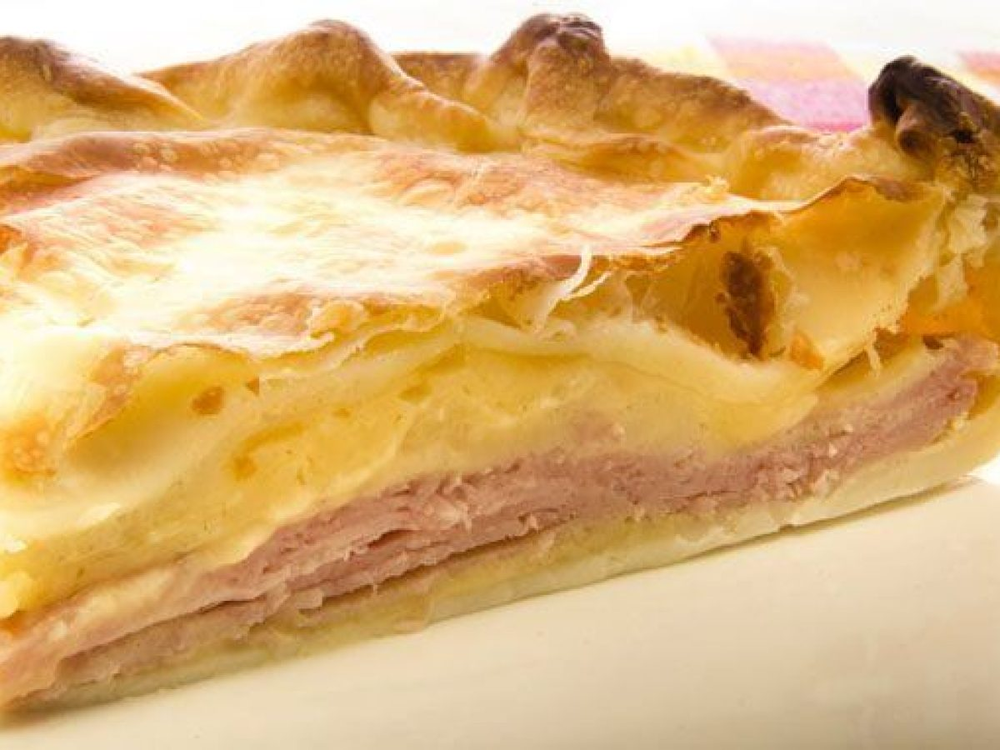

Tarta de Jamón y Queso

Description
A savory pie made with puff or shortcrust pastry, filled with ham, cheese, and eggs. The filling is mixed with cream or milk for a creamy texture. It’s baked until the crust is golden and the cheese melts.
Ingredients
- Puff or shortcrust pastry
- Ham
- Cheese
- Eggs
- Cream or milk
Steps
- Preheat the oven to 375°F (190°C).
- Place the puff or shortcrust pastry in a 9-inch pan.
- Spread the ham and cheese mixture evenly over the pastry.
- Crack the eggs into the mixture.
- Bake for 25 minutes, or until the crust is golden and the cheese is melted.
Index